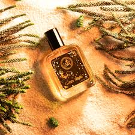

Perfume is a sophisticated mixture of fragrant essential oils, aroma compounds, fixatives, and solvents—usually alcohol and water—designed to emit a pleasant, lasting scent on the body or in living spaces. Originating from the Latin per fumum

Perfume is a sophisticated mixture of fragrant essential oils, aroma compounds, fixatives, and solvents—usually alcohol and water—designed to emit a pleasant, lasting scent on the body or in living spaces. Originating from the Latin per fumum

Perfume is a sophisticated mixture of fragrant essential oils, aroma compounds, fixatives, and solvents—usually alcohol and water—designed to emit a pleasant, lasting scent on the body or in living spaces. Originating from the Latin per fumum
About us
Perfume is a fragrant liquid made from a blend of essential oils, aroma compounds, and solvents that is used to give a pleasant scent to the body, clothes, or surroundings. It has been an important part of human culture for centuries, often associated with beauty, elegance, and personal expression. Perfumes come in a wide variety of scents, such as floral, fruity, woody, and oriental, allowing individuals to choose a fragrance that matches their personality and mood. The art of making perfume, known as perfumery, involves carefully balancing different notes—top, middle, and base—to create a long-lasting and appealing aroma. Today, perfumes are widely used in daily life and special occasions, enhancing confidence and leaving a lasting impression.